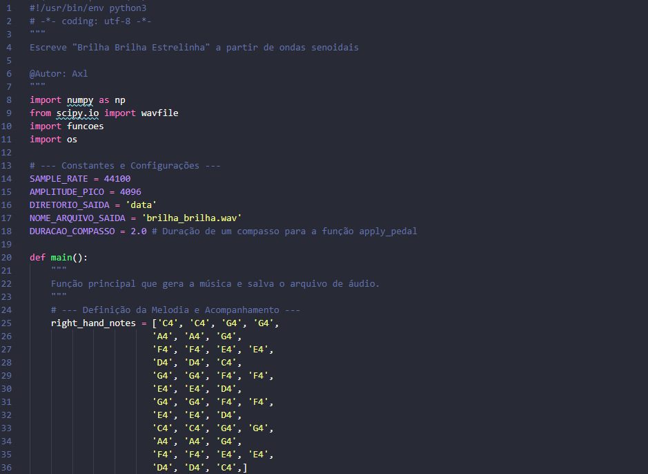
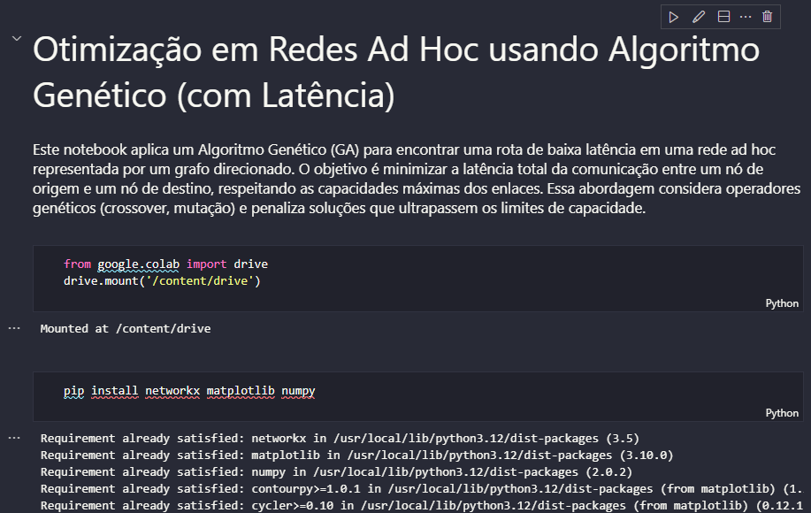

Meus Projetos

MusicaPython
Síntese de áudio em Python: Geração de um arquivo .wav da canção 'Brilha Brilha Estrelinha' com ondas senoidais, sobretons e envelopes ADSR.
Ver no GitHub

GA Multipath Routing
Optimizing data flow and minimizing latency in ad hoc networks using a Genetic Algorithm approach.
Ver no GitHub